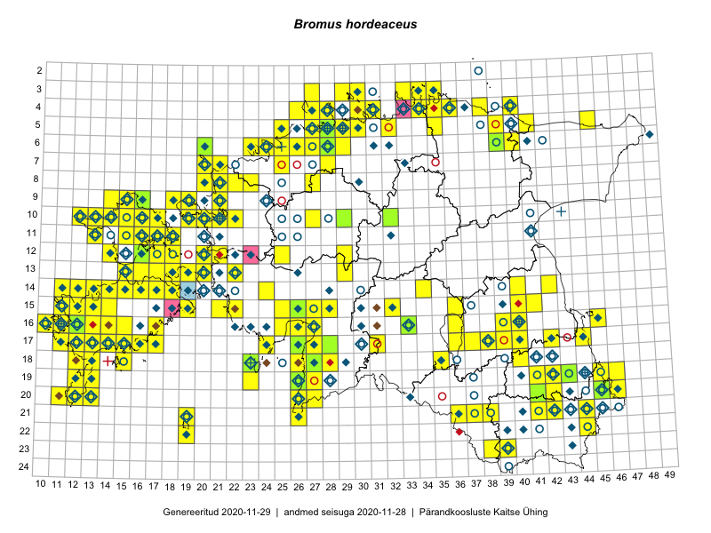

Bromus hordeaceus
Uuendatud: 2016-12-08
Kaardile koondatud taksonid: Bromus hordeaceus L.; Bromus mollis L.

Kaart põhineb 229 kirjel, neist vaatlusi 227 ja eksemplare 2. Taksonit on leitud 157 ruudust.
| Ruut | Vaatleja(d) | Vaatlusaeg | Kirje tüüp | Viide andmebaasikirjele |
|---|---|---|---|---|
| 14-17 | Toomas Kukk, Thea Kull, Timo Luhamäe, Ott Luuk, Peedu Saar | 2015-06-29 | ruut/ala | vaata PlutoFis |
| 13-15 | Toomas Kukk, Eerik Leibak | 2015-08-09 | ruut/ala | vaata PlutoFis |
| 11-17 | Peedu Saar, Toomas Kukk | 2015-05-28 | ruut/ala | vaata PlutoFis |
| 09-14 | Peedu Saar, Toomas Kukk | 2015-05-27 | ruut/ala | vaata PlutoFis |
| 09-15 | Peedu Saar, Toomas Kukk | 2015-05-27 | ruut/ala | vaata PlutoFis |
| 14-15 | Toomas Kukk, Eerik Leibak | 2015-08-09 | ruut/ala | vaata PlutoFis |
| 17-14 | Toomas Kukk, Peedu Saar, Kersti Tambets, Sten Mander, Janika Sammasto | 2015-08-05 | ruut/ala | vaata PlutoFis |
| 10-17 | Toomas Kukk, Eerik Leibak | 2015-08-12 | ruut/ala | vaata PlutoFis |
| 09-14 | Toomas Kukk, Eerik Leibak | 2015-08-10 | ruut/ala | vaata PlutoFis |
| 13-15 | Toomas Kukk, Eerik Leibak | 2015-08-10 | ruut/ala | vaata PlutoFis |
| 10-16 | Peedu Saar, Toomas Kukk | 2015-05-26 | ruut/ala | vaata PlutoFis |
| 10-17 | Peedu Saar, Toomas Kukk | 2015-05-26 | ruut/ala | vaata PlutoFis |
| 12-29 | Tiit Hallikma, Indrek Tammekänd, Toomas Kukk | 2015-06-09 | ruut/ala | vaata PlutoFis |
| 05-45 | Tiit Hallikma, Toomas Kukk | 2015-07-21 | ruut/ala | vaata PlutoFis |
| 17-27 | Peedu Saar, Liina Oja | 2015-06-09 | ruut/ala | vaata PlutoFis |
| 09-15 | Toomas Kukk, Eerik Leibak | 2015-08-11 | ruut/ala | vaata PlutoFis |
| 09-16 | Toomas Kukk, Eerik Leibak | 2015-08-11 | ruut/ala | vaata PlutoFis |
| 16-45 | Toomas Kukk, Eerik Leibak | 2015-07-29 | ruut/ala | vaata PlutoFis |
| 04-31 | Rein Kalamees, Kersti Püssa | 2015-06-30 | ruut/ala | vaata PlutoFis |
| 16-10 | Peedu Saar | 2015-08-07 | ruut/ala | vaata PlutoFis |
| 04-36 | Rein Kalamees, Kersti Püssa | 2015-09-02 | ruut/ala | vaata PlutoFis |
| 05-30 | Rein Kalamees, Kersti Püssa | 2015-05-27 | ruut/ala | vaata PlutoFis |
| 06-27 | Toomas Kukk | 2015-06-19 | ruut/ala | vaata PlutoFis |
| 16-10 | Toomas Kukk | 2014-06-21 | ruut/ala | vaata PlutoFis |
| 16-12 | Toomas Kukk, Mari Reitalu | 2014-06-20 | ruut/ala | vaata PlutoFis |
| 17-12 | Toomas Kukk, Mari Reitalu | 2014-06-20 | ruut/ala | vaata PlutoFis |
| 18-15 | Toomas Kukk | 2014-06-18 | ruut/ala | vaata PlutoFis |
| 03-35 | Rein Kalamees, Kersti Püssa | 2015-05-31 | ruut/ala | vaata PlutoFis |
| 03-34 | Rein Kalamees, Kersti Püssa | 2015-08-23 | ruut/ala | vaata PlutoFis |
| 12-21 | Tiit Hallikma, Toomas Kukk | 2015-08-27 | ruut/ala | vaata PlutoFis |
| 04-34 | Rein Kalamees, Kersti Püssa | 2015-06-02 | ruut/ala | vaata PlutoFis |
| 03-33 | Rein Kalamees, Kersti Püssa | 2015-05-15 | ruut/ala | vaata PlutoFis |
| 04-31 | Rein Kalamees, Kersti Püssa | 2015-06-12 | ruut/ala | vaata PlutoFis |
| 20-46 | Rein Kalamees, Kersti Püssa | 2015-07-16 | ruut/ala | vaata PlutoFis |
| 10-16 | Thea Kull | 2015-06-15 | ruut/ala | vaata PlutoFis |
| 10-15 | Thea Kull | 2015-06-15 | ruut/ala | vaata PlutoFis |
| 10-13 | Thea Kull | 2015-06-14 | ruut/ala | vaata PlutoFis |
| 18-15 | Ott Luuk, Elle Roosaluste, Jaak-Albert Metsoja | 2015-06-16 | ruut/ala | vaata PlutoFis |
| 17-40 | Thea Kull, Peedu Saar | 2015-06-19 | ruut/ala | vaata PlutoFis |
| 14-17 | Meeli Mesipuu, Kadri Tali | 2015-07-08 | ruut/ala | vaata PlutoFis |
| 14-16 | Toomas Kukk, Thea Kull, Ott Luuk, Peedu Saar | 2014-06-27 | ruut/ala | vaata PlutoFis |
| 17-39 | Thea Kull, Peedu Saar | 2015-06-17 | ruut/ala | vaata PlutoFis |
| 20-45 | Toomas Kukk, Timo Luhamäe, Kersti Tambets, Sten Mander, Janika Sammasto | 2014-07-30 | ruut/ala | vaata PlutoFis |
| 17-31 | Ott Luuk, Hannes Pehlak | 2015-06-11 | ruut/ala | vaata PlutoFis |
| 13-16 | Meeli Mesipuu | 2015-07-09 | ruut/ala | vaata PlutoFis |
| 19-27 | Meeli Mesipuu, Indrek Tammekänd | 2015-07-14 | ruut/ala | vaata PlutoFis |
| 18-23 | Ott Luuk, Elle Roosaluste | 2015-05-29 | ruut/ala | vaata PlutoFis |
| 19-23 | Ott Luuk | 2015-05-30 | ruut/ala | vaata PlutoFis |
| 19-45 | Thea Kull, Meeli Mesipuu | 2015-08-19 | ruut/ala | vaata PlutoFis |
| 15-41 | Thea Kull | 2015-06-21 | ruut/ala | vaata PlutoFis |
| 15-40 | Thea Kull | 2015-06-15 | ruut/ala | vaata PlutoFis |
| 11-18 | Eeva-Maria Jeletsky, Tarmo Niitla | 2015-06-17 | ruut/ala | vaata PlutoFis |
| 17-13 | Triin Reitalu, Mari Reitalu | 2015-05-18 | ruut/ala | vaata PlutoFis |
| 19-13 | Oliver Parrest | 2015-07-01 | ruut/ala | vaata PlutoFis |
| 16-33 | Maria Abakumova | 2015-06-09 | ruut/ala | vaata PlutoFis |
| 17-13 | Mari Reitalu, Sirje Azarov | 2015-05-12 | ruut/ala | vaata PlutoFis |
| 15-11 | Triin Reitalu, Mari Reitalu | 2015-06-29 | ruut/ala | vaata PlutoFis |
| 17-24 | Maret Gerz, Leena Gerz | 2015-08-12 | ruut/ala | vaata PlutoFis |
| 16-25 | Maret Gerz, Leena Gerz | 2015-08-09 | ruut/ala | vaata PlutoFis |
| 15-11 | Mari Reitalu | 2014-05-14 | ruut/ala | vaata PlutoFis |
| 05-28 | Erkki Otsman, Sergei Smirnov | 2015-06-26 | ruut/ala | vaata PlutoFis |
| 14-12 | Mari Reitalu, Triin Reitalu | 2015-05-24 | ruut/ala | vaata PlutoFis |
| 15-12 | Mari Reitalu, Triin Reitalu | 2015-05-24 | ruut/ala | vaata PlutoFis |
| 05-29 | Erkki Otsman, Sergei Smirnov | 2015-07-12 | ruut/ala | vaata PlutoFis |
| 16-10 | Mari Reitalu, Oliver Parrest | 2015-08-04 | ruut/ala | vaata PlutoFis |
| 20-13 | Mari Reitalu, Oliver Parrest | 2015-05-26 | ruut/ala | vaata PlutoFis |
| 19-12 | Oliver Parrest | 2015-08-18 | ruut/ala | vaata PlutoFis |
| 16-12 | Mari Reitalu | 2015-06-28 | ruut/ala | vaata PlutoFis |
| 16-12 | Mari Reitalu | 2015-06-10 | ruut/ala | vaata PlutoFis |
| 13-19 | Meeli Mesipuu, Kadri Tali | 2015-06-24 | ruut/ala | vaata PlutoFis |
| 16-12 | Mari Reitalu, Triin Reitalu | 2015-07-20 | ruut/ala | vaata PlutoFis |
| 14-18 | Meeli Mesipuu | 2015-06-22 | ruut/ala | vaata PlutoFis |
| 14-11 | Mari Reitalu, Oliver Parrest | 2015-07-14 | ruut/ala | vaata PlutoFis |
| 17-13 | Mari Reitalu, Oliver Parrest | 2015-08-04 | ruut/ala | vaata PlutoFis |
| 17-13 | Mari Reitalu, Oliver Parrest | 2015-08-12 | ruut/ala | vaata PlutoFis |
| 14-13 | Mari Reitalu, Oliver Parrest | 2015-07-24 | ruut/ala | vaata PlutoFis |
| 15-12 | Mari Reitalu, Oliver Parrest | 2015-07-21 | ruut/ala | vaata PlutoFis |
| 14-40 | Erkki Otsman, Sergei Smirnov | 2015-07-22 | ruut/ala | vaata PlutoFis |
| 16-13 | Mari Reitalu, Oliver Parrest | 2015-05-22 | ruut/ala | vaata PlutoFis |
| 18-12 | Mari Reitalu, Oliver Parrest | 2015-05-22 | ruut/ala | vaata PlutoFis |
| 18-12 | Mari Reitalu, Sirje Azarov, Oliver Parrest | 2015-08-02 | ruut/ala | vaata PlutoFis |
| 15-13 | Mari Reitalu, Oliver Parrest | 2015-05-14 | ruut/ala | vaata PlutoFis |
| 15-13 | Mari Reitalu, Oliver Parrest | 2015-07-24 | ruut/ala | vaata PlutoFis |
| 20-11 | Mari Reitalu, Oliver Parrest | 2015-05-26 | ruut/ala | vaata PlutoFis |
| 14-12 | Mari Reitalu, Oliver Parrest | 2015-07-21 | ruut/ala | vaata PlutoFis |
| 17-12 | Mari Reitalu, Triin Reitalu | 2015-05-05 | ruut/ala | vaata PlutoFis |
| 17-12 | Mari Reitalu, Triin Reitalu | 2015-07-22 | ruut/ala | vaata PlutoFis |
| 14-11 | Mari Reitalu, Triin Reitalu | 2015-05-24 | ruut/ala | vaata PlutoFis |
| 13-22 | Kirsi Loide, Marje Loide | 2015-08-10 | ruut/ala | vaata PlutoFis |
| 15-11 | Mari Reitalu, Oliver Parrest | 2015-07-16 | ruut/ala | vaata PlutoFis |
| 20-12 | Mari Reitalu, Oliver Parrest | 2015-05-26 | ruut/ala | vaata PlutoFis |
| 20-12 | Triin Reitalu, Sirje Azarov | 2015-05-30 | ruut/ala | vaata PlutoFis |
| 16-11 | Triin Reitalu, Mari Reitalu | 2015-08-09 | ruut/ala | vaata PlutoFis |
| 18-13 | Mari Reitalu, Oliver Parrest | 2015-05-27 | ruut/ala | vaata PlutoFis |
| 17-42 | Kirsi Loide, Marje Loide | 2015-07-27 | ruut/ala | vaata PlutoFis |
| 16-11 | Mari Reitalu, Triin Reitalu | 2015-05-28 | ruut/ala | vaata PlutoFis |
| 17-11 | Mari Reitalu, Triin Reitalu | 2015-05-19 | ruut/ala | vaata PlutoFis |
| 18-13 | Oliver Parrest | 2015-07-15 | ruut/ala | vaata PlutoFis |
| 20-12 | Oliver Parrest | 2015-08-15 | ruut/ala | vaata PlutoFis |
| 20-13 | Oliver Parrest | 2015-08-15 | ruut/ala | vaata PlutoFis |
| 17-11 | Mari Reitalu, Triin Reitalu | 2015-08-05 | ruut/ala | vaata PlutoFis |
| 16-10 | Sirje Azarov, Mari Reitalu | 2015-06-22 | ruut/ala | vaata PlutoFis |
| 16-10 | Sirje Azarov, Mari Reitalu | 2015-08-22 | ruut/ala | vaata PlutoFis |
| 16-26 | Meeli Mesipuu | 2015-06-19 | ruut/ala | vaata PlutoFis |
| 16-27 | Meeli Mesipuu | 2015-06-17 | ruut/ala | vaata PlutoFis |
| 18-28 | Meeli Mesipuu, Timo Luhamäe | 2015-06-09 | ruut/ala | vaata PlutoFis |
| 12-25 | Aat Sarv | 2015-07-30 | ruut/ala | vaata PlutoFis |
| 19-46 | Meeli Mesipuu, Thea Kull | 2015-08-19 | ruut/ala | vaata PlutoFis |
| 10-12 | Meeli Mesipuu | 2015-05-27 | ruut/ala | vaata PlutoFis |
| 11-13 | Meeli Mesipuu, Timo Luhamäe | 2015-05-27 | ruut/ala | vaata PlutoFis |
| 17-16 | Sirje Azarov, Aira Alasi | 2015-08-12 | ruut/ala | vaata PlutoFis |
| 11-18 | Meeli Mesipuu, Timo Luhamäe | 2015-05-26 | ruut/ala | vaata PlutoFis |
| 11-16 | Meeli Mesipuu, Timo Luhamäe | 2015-05-28 | ruut/ala | vaata PlutoFis |
| 19-26 | Meeli Mesipuu | 2015-05-20 | ruut/ala | vaata PlutoFis |
| 06-24 | Mari Metsoja, Jaak-Albert Metsoja | 2015-07-31 | ruut/ala | vaata PlutoFis |
| 19-26 | Meeli Mesipuu | 2015-05-20 | punkt | vaata PlutoFis |
| 05-25 | Mari Metsoja, Jaak-Albert Metsoja | 2015-07-30 | ruut/ala | vaata PlutoFis |
| 06-26 | Mari Metsoja, Jaak-Albert Metsoja | 2015-07-29 | ruut/ala | vaata PlutoFis |
| 17-16 | Sirje Azarov, Aira Alasi | 2015-08-17 | ruut/ala | vaata PlutoFis |
| 18-35 | Helle Mäemets, Mare Leis | 2015-06-24 | ruut/ala | vaata PlutoFis |
| 08-23 | Mari Metsoja, Jaak-Albert Metsoja | 2015-05-23 | ruut/ala | vaata PlutoFis |
| 15-36 | Helle Mäemets, Mare Leis | 2015-07-06 | ruut/ala | vaata PlutoFis |
| 05-25 | Mari Metsoja, Jaak-Albert Metsoja | 2015-05-30 | ruut/ala | vaata PlutoFis |
| 06-24 | Jaak-Albert Metsoja, Mari Metsoja, Ott Luuk | 2015-06-05 | ruut/ala | vaata PlutoFis |
| 06-23 | Mari Metsoja, Jaak-Albert Metsoja, Ott Luuk | 2015-06-04 | ruut/ala | vaata PlutoFis |
| 06-23 | Jaak-Albert Metsoja, Mari Metsoja, Ott Luuk | 2015-06-05 | ruut/ala | vaata PlutoFis |
| 17-36 | Helle Mäemets, Mare Leis | 2015-06-25 | ruut/ala | vaata PlutoFis |
| 05-39 | Kaili Orav, Silvia Pihu | 2015-06-19 | ruut/ala | vaata PlutoFis |
| 13-20 | Kadri Tali | 2015-06-05 | ruut/ala | vaata PlutoFis |
| 13-19 | Kadri Tali | 2015-06-03 | ruut/ala | vaata PlutoFis |
| 10-20 | Ott Luuk, Peedu Saar | 2014-07-29 | ruut/ala | vaata PlutoFis |
| 08-20 | Marju Erit | 2015-08-01 | ruut/ala | vaata PlutoFis |
| 17-11 | Peedu Saar, Toomas Kukk, Ott Luuk, Thea Kull, Mari Reitalu | 2014-06-28 | ruut/ala | vaata PlutoFis |
| 20-11 | Mari Reitalu, Triin Reitalu | 2015-07-19 | ruut/ala | vaata PlutoFis |
| 03-30 | Mari Reitalu, Tõnu Ploompuu, Ott Luuk, Peedu Saar | 2014-06-01 | ruut/ala | vaata PlutoFis |
| 03-29 | Ott Luuk, Mari Reitalu, Tõnu Ploompuu | 2014-06-01 | ruut/ala | vaata PlutoFis |
| 19-12 | Ott Luuk, Mari Reitalu, Thea Kull | 2014-05-23 | ruut/ala | vaata PlutoFis |
| 03-30 | Elle Roosaluste, Peedu Saar, Ott Luuk, Mari Reitalu | 2014-05-31 | ruut/ala | vaata PlutoFis |
| 04-30 | Elle Roosaluste, Ott Luuk, Peedu Saar, Tõnu Ploompuu | 2014-05-31 | ruut/ala | vaata PlutoFis |
| 10-20 | Tõnu Ploompuu, Anna-Grete Rebane, Hanna-Eliisa Luts | 2015-07-20 | ruut/ala | vaata PlutoFis |
| 16-11 | Mari Reitalu, Triin Reitalu | 2015-08-09 | ruut/ala | vaata PlutoFis |
| 06-27 | Tõnu Ploompuu | 2015-08-11 | ruut/ala | vaata PlutoFis |
| 09-18 | Toomas Kukk, Peedu Saar | 2016-05-13 | punkt | vaata PlutoFis |
| 09-19 | Toomas Kukk, Peedu Saar | 2016-05-13 | punkt | vaata PlutoFis |
| 04-26 | Peedu Saar, Thea Kull | 2016-05-25 | ruut/ala | vaata PlutoFis |
| 04-27 | Toomas Kukk | 2016-05-25 | ruut/ala | vaata PlutoFis |
| 09-21 | Kadi-Liis Kesler, Tõnu Ploompuu | 2015-07-14 | ruut/ala | vaata PlutoFis |
| 06-28 | Tõnu Ploompuu | 2015-06-06 | ruut/ala | vaata PlutoFis |
| 17-26 | Toomas Kukk, Tiit Hallikma | 2016-06-04 | ruut/ala | vaata PlutoFis |
| 06-28 | Toomas Kukk | 2016-06-02 | ruut/ala | vaata PlutoFis |
| 20-26 | Peedu Saar, Thea Kull | 2016-06-06 | ruut/ala | vaata PlutoFis |
| 19-26 | Peedu Saar, Thea Kull | 2016-06-07 | ruut/ala | vaata PlutoFis |
| 20-27 | Thea Kull, Peedu Saar | 2016-06-06 | ruut/ala | vaata PlutoFis |
| 21-26 | Thea Kull, Peedu Saar | 2016-06-07 | ruut/ala | vaata PlutoFis |
| 10-21 | Tõnu Ploompuu | 2015-08-21 | ruut/ala | vaata PlutoFis |
| 10-22 | Tõnu Ploompuu | 2015-05-20 | ruut/ala | vaata PlutoFis |
| 19-43 | Vivika Väli, Ülo Väli | 2015-08-05 | punkt | vaata PlutoFis |
| 21-36 | Kai Rünk, Ülle Jõgar, Illi Tarmu | 2016-06-15T06:00Z | ruut/ala | vaata PlutoFis |
| 18-40 | Toomas Kukk, Tiit Hallikma, Johannes Kõdar | 2016-06-13 | ruut/ala | vaata PlutoFis |
| 21-44 | Toomas Kukk, Tiit Hallikma, Johannes Kõdar | 2016-06-14 | ruut/ala | vaata PlutoFis |
| 19-42 | Ott Luuk, Sander Laherand | 2016-06-17 | ruut/ala | vaata PlutoFis |
| 19-43 | Sander Laherand, Ott Luuk | 2016-06-17 | ruut/ala | vaata PlutoFis |
| 23-38 | Rein Kalamees, Eerik Leibak | 2016-06-16 | ruut/ala | vaata PlutoFis |
| 21-42 | Sander Laherand, Ott Luuk | 2016-06-16 | ruut/ala | vaata PlutoFis |
| 21-19 | Silvia Pihu | 2015-07-01 | ruut/ala | vaata PlutoFis |
| 22-19 | Silvia Pihu | 2015-07-03 | ruut/ala | vaata PlutoFis |
| 21-37 | Silvia Pihu | 2015-06-28 | ruut/ala | vaata PlutoFis |
| 21-41 | Ott Luuk, Sander Laherand | 2016-06-16 | ruut/ala | vaata PlutoFis |
| 14-24 | Thea Kull | 2016-06-21 | ruut/ala | vaata PlutoFis |
| 16-15 | Meeli Mesipuu | 2016-06-28 | ruut/ala | vaata PlutoFis |
| 17-44 | Maret Gerz, Liina Oja | 2016-06-13 | ruut/ala | vaata PlutoFis |
| 19-43 | Vivika Väli, Ülo Väli | 2015-08-05 | ruut/ala | vaata PlutoFis |
| 18-27 | Peedu Saar, Ott Luuk | 2016-06-10 | ruut/ala | vaata PlutoFis |
| 20-41 | Vivika Väli, Ülo Väli | 2015-07-27 | ruut/ala | vaata PlutoFis |
| 06-28 | Toomas Kukk | 2016-07-04 | ruut/ala | vaata PlutoFis |
| 06-25 | Toomas Kukk, Sander Laherand | 2016-07-05 | ruut/ala | vaata PlutoFis |
| 15-25 | Toomas Kukk, Oliver Parrest | 2016-07-08 | ruut/ala | vaata PlutoFis |
| 06-26 | Tiina Elvisto, Eerik Leibak | 2016-07-04 | ruut/ala | vaata PlutoFis |
| 15-19 | Mari Reitalu, Triin Reitalu | 2016-06-30 | ruut/ala | vaata PlutoFis |
| 17-36 | Rein Kalamees, Kersti Püssa | 2016-07-20 | ruut/ala | vaata PlutoFis |
| 20-42 | Tarmo Niitla, Peedu Saar | 2016-06-16 | ruut/ala | vaata PlutoFis |
| 15-32 | Toomas Kukk, Liina Oja | 2016-07-21 | ruut/ala | vaata PlutoFis |
| 04-38 | Thea Kull, Susanna Vain, Eerik Leibak | 2016-07-26 | ruut/ala | vaata PlutoFis |
| 05-25 | Sander Laherand, Toomas Kukk | 2016-07-05 | ruut/ala | vaata PlutoFis |
| 14-34 | Thea Kull, Tiit Hallikma | 2016-07-22 | ruut/ala | vaata PlutoFis |
| 11-15 | Thea Kull, Peedu Saar | 2016-08-09 | ruut/ala | vaata PlutoFis |
| 12-17 | Thea Kull, Sander Laherand | 2016-08-11 | ruut/ala | vaata PlutoFis |
| 11-18 | Sander Laherand, Peedu Saar, Nele Jõessar | 2016-08-08 | ruut/ala | vaata PlutoFis |
| 14-24 | Aat Sarv, Oliver Parrest | 2016-07-18 | ruut/ala | vaata PlutoFis |
| 06-40 | Sander Laherand, Peedu Saar | 2016-07-28 | ruut/ala | vaata PlutoFis |
| 04-35 | Sander Laherand, Ott Luuk, Nele Jõessar | 2016-07-26 | ruut/ala | vaata PlutoFis |
| 09-19 | Rein Kalamees | 2016-06-11 | ruut/ala | vaata PlutoFis |
| 12-14 | Toomas Kukk, Meeli Mesipuu | 2016-08-10 | ruut/ala | vaata PlutoFis |
| 17-17 | Toomas Kukk, Meeli Mesipuu | 2016-08-12 | ruut/ala | vaata PlutoFis |
| 17-16 | Toomas Kukk, Meeli Mesipuu | 2016-08-12 | ruut/ala | vaata PlutoFis |
| 09-19 | Rein Kalamees, Liina Oja | 2016-07-07 | ruut/ala | vaata PlutoFis |
| 13-29 | Sirje Azarov, Oliver Parrest | 2016-07-22 | ruut/ala | vaata PlutoFis |
| 10-19 | Rein Kalamees, Liina Oja | 2016-07-07 | ruut/ala | vaata PlutoFis |
| 12-20 | Rein Kalamees, Liina Oja | 2016-07-08 | ruut/ala | vaata PlutoFis |
| 14-14 | Mari Reitalu, Sirje Azarov | 2016-07-26 | ruut/ala | vaata PlutoFis |
| 18-13 | Mari Reitalu, Sirje Azarov | 2016-07-31 | ruut/ala | vaata PlutoFis |
| 16-27 | Tiit Hallikma, Tõnu Ploompuu | 2016-06-20 | ruut/ala | vaata PlutoFis |
| 15-27 | Tiit Hallikma, Tõnu Ploompuu | 2016-06-20 | ruut/ala | vaata PlutoFis |
| 07-25 | Helle Mäemets, Tiina Elvisto | 2016-07-05 | ruut/ala | vaata PlutoFis |
| 17-42 | Jaak-Albert Metsoja, Mari Metsoja | 2016-06-13 | ruut/ala | vaata PlutoFis |
| 16-17 | Peedu Saar, Ott Luuk | 2016-09-01 | ruut/ala | vaata PlutoFis |
| 17-44 | Peedu Saar | 2016-08-24 | ruut/ala | vaata PlutoFis |
| 08-20 | Tiit Hallikma, Tõnu Ploompuu | 2016-07-07 | ruut/ala | vaata PlutoFis |
| 08-21 | Tiit Hallikma, Tõnu Ploompuu | 2016-07-07 | ruut/ala | vaata PlutoFis |
| 05-35 | Peedu Saar, Liina Oja, Susanna Vain | 2016-07-27 | ruut/ala | vaata PlutoFis |
| 04-40 | Tiit Hallikma, Ott Luuk | 2016-07-28 | ruut/ala | vaata PlutoFis |
| 05-41 | Tiit Hallikma, Tõnu Ploompuu | 2016-07-26 | ruut/ala | vaata PlutoFis |
| 10-27 | Peedu Saar, Timo Luhamäe, Johannes Kõdar | 2016-07-06 | ruut/ala | vaata PlutoFis |
| 05-28 | Kadi-Liis Kesler, Tiina Elvisto | 2015-05-12 | ruut/ala | vaata PlutoFis |
| 06-29 | Kadi-Liis Kesler, Tiina Elvisto | 2015-06-27 | ruut/ala | vaata PlutoFis |
| 07-21 | Meeli Mesipuu | 2016-07-07 | ruut/ala | vaata PlutoFis |
| 09-14 | Meeli Mesipuu, Maret Gerz | 2016-08-09 | ruut/ala | vaata PlutoFis |
| 18-26 | Ott Luuk, Peedu Saar | 2016-06-10 | ruut/ala | vaata PlutoFis |
| 19-41 | Ott Luuk, Sander Laherand, Susanna Vain | 2016-06-13 | ruut/ala | vaata PlutoFis |
| 20-45 | Jaak-Albert Metsoja, Mari Metsoja | 2016-06-14 | ruut/ala | vaata PlutoFis |
| 21-37 | Jaak-Albert Metsoja, Mari Metsoja | 2016-06-16 | ruut/ala | vaata PlutoFis |
| 21-38 | Jaak-Albert Metsoja, Mari Metsoja | 2016-06-17 | ruut/ala | vaata PlutoFis |
| 06-20 | Jaak-Albert Metsoja, Mari Metsoja | 2016-06-30 | ruut/ala | vaata PlutoFis |
| 07-20 | Jaak-Albert Metsoja, Mari Metsoja | 2016-07-01 | ruut/ala | vaata PlutoFis |
| 07-20 | Jaak-Albert Metsoja, Mari Metsoja | 2016-06-30 | ruut/ala | vaata PlutoFis |
| 17-15 | Elle Rajandu, Karin Kikas | 2015-07-22 | ruut/ala | vaata PlutoFis |
| 18-27 | Oliver Parrest, Elle Rajandu | 2016-07-19 | ruut/ala | vaata PlutoFis |
| 17-28 | Peedu Saar | 2015-06-09 | eksemplar | vaata PlutoFis |
| 16-12 | Ott Luuk | 2014-05-22 | eksemplar | vaata PlutoFis |